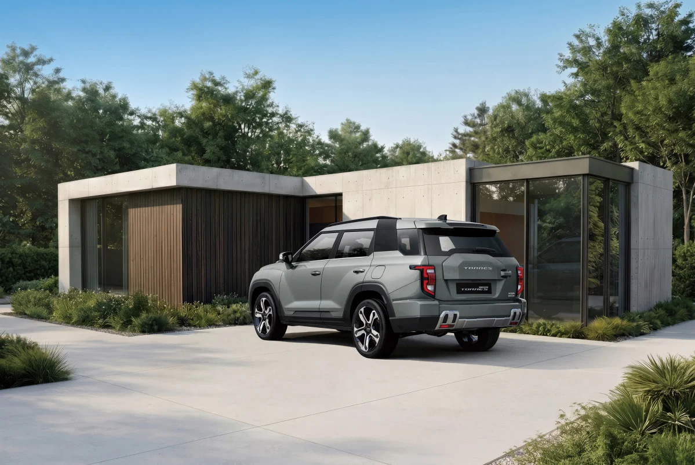
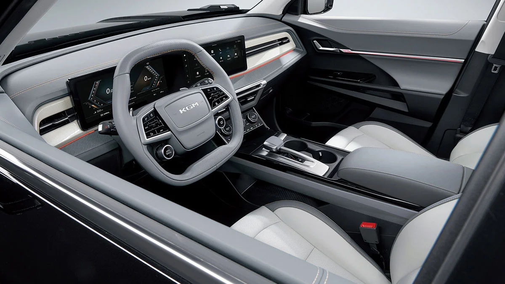

▲ KGM이 5월 20일 출시한 중형 SUV 토레스의 페이스리프트 모델 '뉴 토레스' ⓒ KGM
KGM이 중형 SUV 토레스의 페이스리프트 모델 '뉴 토레스'를 2026년 5월 20일 출시했습니다. 같은 날 액티언과 토레스 EVX의 연식변경 모델도 함께 나오며, KGM은 이번 라인업 정비를 통해 판매 반등을 노리고 있습니다. 외관은 강인함을 유지하면서도 한층 정교해졌고, 파워트레인과 실내 조작계까지 손을 댄 사실상 '풀체인지급' 개선이라는 평가가 나옵니다.
| 파워트레인 | T5 | T7 |
|---|---|---|
| 1.5 가솔린 터보 | 2,905만원 | 3,241만원 |
| 1.5 터보 하이브리드 | 3,205만원 | 3,651만원 |
1. 가솔린 2,905만원, 하이브리드 3,205만원부터
뉴 토레스는 1.5 가솔린 터보와 1.5 터보 하이브리드 두 파워트레인에 각각 T5·T7 트림을 둡니다. 가솔린은 2,905만~3,241만원, 하이브리드는 3,205만~3,651만원 구간에 가격이 형성돼 있습니다. 이전 모델 대비 파워트레인과 편의사양이 크게 개선됐음에도 가격 인상은 최소화했다는 평가가 나오는데, 경쟁이 치열한 중형 SUV 시장에서 가격 경쟁력을 유지하려는 전략으로 풀이됩니다.
2. 6단에서 8단으로 — 파워트레인 다단화

▲ 기존 6단 변속기의 낮은 정숙성 지적을 반영해 8단으로 다단화했다 ⓒ KGM
가장 큰 변화는 변속기입니다. 소음·진동 성능이 부족하다는 지적을 받아온 기존 아이신 6단 자동변속기를 8단으로 교체해 가속 응답성과 주행 질감을 끌어올렸습니다. 1.5 가솔린 터보 엔진은 최고출력 170마력, 최대토크 30.6kgf·m, 복합연비 11.0km/L를 발휘합니다. 드라이빙 모드는 노멀·스포츠·윈터에 연비 효율을 높이는 2WD 모드까지 더해 총 7가지를 지원합니다.
3. 처음 탑재된 터레인 모드 — 샌드·머드·스노우&그래블

▲ 수평으로 확장된 버티컬 타입 라디에이터 그릴이 강인한 인상을 강조한다 ⓒ KGM
4WD를 선택하면 토레스 최초로 '터레인 모드'를 쓸 수 있습니다. 모래·자갈 등 불안정한 노면에서의 탈출력과 조향 안정성을 높이는 샌드, 진흙·비포장 요철 노면에 대응하는 머드, 눈길 등 저마찰 노면에서 가속과 조향을 최적화하는 스노우&그래블까지 3가지 모드로 구성됩니다. 노면 상태에 맞춰 구동력과 조향 성능을 자동으로 배분해, 오프로드 주행에서도 안정감을 더했습니다.
4. 실내 변화 — "운전 중 터치 불편" 지적에 다이얼로 교체

▲ 기존 터치 방식 조작계 대신 물리 다이얼을 적용해 조작 편의성을 높였다 ⓒ KGM
기존 토레스는 공조 등 일부 조작을 터치 방식으로 처리해 주행 중 시선이 분산된다는 지적을 받아왔습니다. 뉴 토레스는 이런 피드백을 반영해 해당 조작부를 물리 다이얼로 바꿨습니다. 외관은 수평으로 확장된 버티컬 타입 라디에이터 그릴과 범퍼 그릴 패턴이 헤드램프와 매끄럽게 이어지도록 다듬어 강인하면서도 정교한 인상을 완성했습니다. 페이스리프트 수준을 넘어 상품성 전반을 재정비했다는 평가가 나오는 이유입니다.